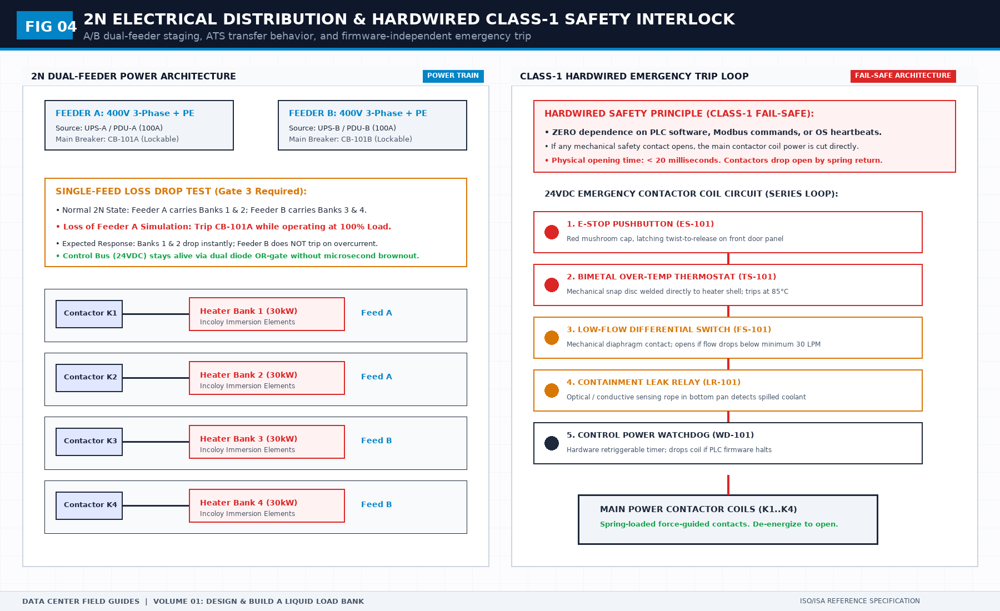

What a load bank prototype must not prove
Direct Answer Block: How to separate rack-side load bank prototype acceptance gates (Gate 1–4) from facility hall integrated systems testing and GPU software validation. In mission-critical data center commissioning and operations, engineers enforce this boundary using deterministic physical equations, calibrated field instrumentation, and auditable sign-off gates rather than relying on vendor brochure summaries, uncalibrated software plots, or verbal assurances. Every measurement and state transition must be recorded with synchronized UTC timestamps and explicit pass/fail thresholds before a signature is granted.

A prototype acceptance answers a narrow question: does this unit do the duty on the requirements sheet, and does a failed read show up as a gap rather than a fresh timestamp on an old value? It does not answer whether the hall is commissioned, whether the CDU is adequate, or whether the future IT load will run.
Those extra sentences are how a bench photo becomes a project milestone. Strike them on the day. A unit that holds a setpoint on a bench has not seen the hall's pumps, strainers, or control loop. Say "prototype accepted for the duty named." Do not say "liquid cooling verified."
The acceptance also has to show a deliberate failure. Disconnect a sensor, or stop a publisher, and confirm the export marks a gap. A quiet trend with new timestamps is not a pass. It is the stale failure you will meet again when the file is judged. If that demonstration is skipped because the curve looks calm, the calm is untrusted.
Calibration belongs on the same sheet as the gate. A number with no instrument record is a number you cannot hand to the next book, the one that reads the file. Do not ship a prototype on a verbal "instruments are fine."
1. First-Principles Engineering Formulation and Governing Mathematics
In high-density data center environments, verbal summaries and qualitative status tiles routinely obscure incipient physical failures. Whether auditing a 120 kW liquid-cooled rack boundary, evaluating a 1-second telemetry time series, or verifying plant redundancy prior to handover, the governing physical relationship for this protocol is expressed as:
When any term on the left-hand or right-hand side of this relationship is left unmeasured, inferred from an uncalibrated nameplate, or averaged across an unverified time window, the resulting engineering record cannot support a valid operational signature. Field engineers must verify each physical variable independently using NIST/ISO 17025 traceable instruments before proceeding to the next gate in the sequence.
| Audit Verification Parameter | Unacceptable / Defective Field Practice | Auditable First-Principles Requirement | Mandatory Action on Failure |
|---|---|---|---|
| Primary Boundary Definition | Implied by vendor brochure or slide deck | Explicitly bounded on stamped P&ID / SLD with tag IDs | Halt acceptance; issue formal boundary clarification |
| Measurement & Telemetry Proof | Single uncalibrated display reading or 60-sec average | Calibrated Class A/0.5S sensor with 1-sec UTC timestamp | Reject dataset; classify point as 0x40 Stale or 0x80 Bad |
| Pass / Fail Acceptance Gate | Qualitative "Looks OK" or "Within Normal Range" | Quantitative numerical corridor cited from revision in force | Log Category A/B defect; withhold retainage or permit |
| Custody & Sign-Off Record | Single bundled "Accepted" signature at end of meeting | Scoped, dated sentence naming exact proved & unproved lines | Strike unsupported claims; issue Conditional Refusal |
2. Deep-Dive Technical Protocol and Field Implementation
The following field protocol—adapted directly from **Volume 01: *Design and Build a Liquid Load Bank for NVL72 Racks***—establishes the step-by-step verification mechanics required on the data hall floor:
This is the chapter the rest of the book is for. An unaccepted prototype is a liability with a nameplate. A prototype accepted against a slideshow is the same liability, with better lighting.
Acceptance is a sequence of gates. The sequence is the method. Teams fail when they start the heat run because the truck is waiting, while a valve still cannot be reached, or they waive the data exit because the local display looked fine. The truck can wait. A load bank that leaks at the fitting does not get a heat run so the schedule can say the heat run happened. A heat run on a leaking unit is not evidence of duty. It is evidence that you were in a hurry.
Four gates, in order. Static and workmanship. Power and communications. Load steps. Overload. Do not start the next gate to save the day on a failed earlier one. Do not run them in parallel on the same unit to save an afternoon. Parallel gates hide the failure mode you most need, which is a unit that looks electrically alive and is hydraulically unfinished.
The sheet you walk in with is the sheet from the earlier chapters, revision marked, unknowns either filled or converted into explicit limitations. If material unknowns remain in a do-not-ship cell, you are not at acceptance. You are at a design review. Hold the review. Do not rename it acceptance to keep the date.
Roles
Name four roles, even if two people hold all of them. The owner of the sheet, who may not quietly edit a stop condition during the day. The operator, who commands plateaus and is not the same person who built the contactor logic, if you can arrange that. The recorder, who writes what happened, including the boring passes. The stranger, who was not in the build and who will be handed the export. If your team is one person, the stranger still has to be someone else, even if only for an hour. Self-acceptance is how stale data survives.
Name who may waive a gate. The default is nobody on the day. A waiver is a revision of the sheet, signed by the sheet owner and by whoever signed scope, with a limitation added, and with the claim reduced to match. A waiver that keeps the claim and drops the evidence is not a waiver. It is a decision to ship a rumor. Write that sentence at the top of the sheet so it is in the room.
Setup is not a gate, and it can still stop you
Before Gate 1, record the setup. What loop is connected. What it can absorb. What it can deliver. What feed is connected. Which revision of the sheet you are using. Which revision of the cited interface specification, if a citation is in play. The identity of the unit: a serial or a shop mark that will still mean something in a year. If the unit has no identity, give it one before you start. Acceptance of an anonymous chassis will be mis-filed onto its successor.
If the temporary loop cannot absorb the longest dwell or cannot deliver the flow you intend to demand, do not enter Gate 3. You may still do Gate 1 and Gate 2. Write “Gate 3 not started, loop inadequate” and stop. That sentence is a successful use of the method. It is not a failed prototype. A failed prototype is one you declared passed against an inadequate loop.
Photographs are allowed. They are not the record. The record is the sheet with pass, fail, or not-started on every line, signed, with the export attached for the gates that produce data. A photograph of a green lamp is a souvenir.
Gate 1. Static and workmanship
Compare the physical object to the requirement sheet and to the P&ID diagram (Figure 02), not to a memory of a 3D CAD rendering. (See Figure 06 for the sequential gate state machine and the fail-closed barrier rules).
Walk the reaches and couplings:
- Danfoss FD83 Quick Disconnect Verification: Inspect both supply and return FD83 couplings. Verify that the mechanical dual interlock operates smoothly: with fluid unpressurized, the coupling must engage and snap the safety lock pin firmly into detent. Verify that the internal ball valve handle cannot be turned to "Open" while uncoupled, and that the sleeve cannot be retracted to "Disconnect" while the valve is open. A coupling with a bent lock pin, stuck sleeve, or scratched sealing face is an immediate Gate 1 fail.
- Hose Routing & Bend Radius: Verify that the EPDM/reinforced hoses maintain a minimum bend radius of R ≥ 6D under actual operating geometry. No kinks, no chafing against sheet metal edges, no mechanical hose weight suspended from the coupling neck, and no hose drape obstructing electrical enclosure access or module removal.
- Pre-Commissioning Flushing Bypass: Verify that the 50-micron inline bypass strainer (V-105 loop) is installed and piped. Perform an initial cold-water wash through the bypass; inspect the strainer basket for machining swarf or pipe scale before allowing liquid into the main heater core.
- Hydrostatic Hold & Joint Leak Inspection: Pressurize the unit to 1.5× rated working pressure (e.g. 9.0 bar cold) and hold for 30 minutes. Zero visible weep across all NPT/BSP threads, tri-clamp sanitary ferrules, and valve stems.
- Drip Path Test: With the electrical section powered down and cabinet open, pour a deliberate cup of water over the exterior of the liquid section. Verify that runoff drains completely into the bottom containment tray without tracking a single drop into the high-voltage electrical compartment. If liquid tracks into live enclosures, stop. The day ends as a mechanical redesign day.
Gate 1 fails closed. Anything you would otherwise discover with the loop full and the commissioning truck waiting outside is an automatic stop.
Gate 2. Power, Megger testing, and telemetry
The feed matches the power interface line. Electrical testing must not rely on casual verbal assurances:
- Megger Insulation Resistance: Apply DC 1000V for 60 seconds between the main busbars and the chassis protective earth (PE). Measured resistance must be ≥ 10 MΩ. Record the exact value on the acceptance sheet.
- Dielectric Withstand (Hipot): Subject the main circuits to power-frequency 1.5 kV AC for 1 minute with zero flashover or breakdown.
- Hardwired E-Stop Circuit Trip: Assert the manual E-Stop pushbutton and verify that the main power contactors drop open within 20 milliseconds by spring return. Verify that control power (24VDC) remains alive to maintain alarm logging.
- Local Disconnect Interlock: Open the main lockable disconnect switch. Attempt a remote software start command over Modbus. Verify that heat cannot be energized under any software override.
The unit can be found by the test platform under the identity commissioned today. That identity is written on the sheet. It is not in this book, and it is not a default you promised a vendor in a footnote. Points in the instrument chapter can be read: both temperatures, both pressures, flow, electrical power, valve states where valves are powered, alarms. Each has a unit, a timestamp, and a quality. A disagreed or missing point retries or alarms. It does not freeze the last good value and stamp a new time.
Prove the stale-data rule. Disconnect one sensor or stop one read, on purpose, for long enough that a lazy system would have repeated the value. The export must show a gap or a bad quality flag over that interval. If it shows a smooth continuation, the exit fails. This test is worth more than a dashboard review. Do it even if everyone is annoyed.
Local indication and remote indication tell the same story, or the difference is documented as a known limitation before you proceed. A limitation that says “display and export disagree and we do not know why” is not acceptable. A limitation that says “display is rounded to a coarser step than the export” can be acceptable if the stranger can still answer the questions. Run the stranger test here, on an idle export. Command nothing. Confirm the stranger can see that nothing was commanded, that quality is good, and that the points are the points on the diagram. If the stranger cannot map a column to a diagram name, fix the names. Do not teach the stranger a private dialect and call that a pass.
Alarms at idle: cause one informational alarm if you can do it safely, and one protection alarm by simulation. Confirm local indication, record line, and action. For the protection alarm, confirm heat cannot be commanded while it is latched, if that is the rule you wrote. Reset only from the place you specified. A reset that anyone can do remotely, with no local acknowledgement, will be used to clear a trip during a later run. If that is not what you wanted, you will learn it now.
Network loss while a stop is asserted. The stop remains. Heat stays off. The unit does not reboot into a default full load. Defaults to full load exist in this world because someone thought a demo should look alive. Hunt for that default. Power-cycle with the remote path silent. The resulting state is heat off, or heat off until a local person commands a plateau. Anything else fails.
Gate 2 pass: identity recorded, points live, stale data marked, stranger can read an idle file, protection alarm tested without destruction, local disconnect and network-loss behaviors match the sheet. Gate 2 fail: any of those missing. Do not proceed to heat in order to “see the points under load” if the points are already lying at idle. Load will not make a liar honest. It will make the lie expensive.
Gate 3. Load steps
Enter only from a passed Gate 2 and an adequate loop. Start from the recorded valve line-up. Start the export first. If the export is not running, the step does not count. A step that happened in the room and not in the file did not happen.
The sequence is a shape, and the prototype plans in the working file already use one. Power on. Self-check, recorded, not a splash you believe. Initialize: heat still off, flow readable, no latched protection. Then sit at quarters of the duty: a quarter, a half, three quarters, full. Then zero. Then shut down. The record covers the whole path. An alarm that is not explained fails the path. This quarter sequence is a usable default when the sheet has no other citation. It is not a law. If your duty citation demands different steps, use those, and say why the quarters were not enough.
The same plans then make a separate visit above full, and come back to zero. Their paperwork uses a short step above the rated point. Do not copy their percentage into your sheet as an industry overload. Do copy the shape: name the level, name the dwell, record it, leave it. A visit you extend because it looks calm is no longer the visit on the sheet.
A liquid-system test procedure in the same file uses the load-bank controller to walk those steps while other people record the coolant distribution unit, on both sides of its heat exchanger, and look at electrical terminals with a thermal camera. That procedure is a later book. The requirement it puts on this unit is not. The controller must be able to hold each step long enough for those other readings to be taken, and the export must show that the step was the step they think they recorded. If the controller can only be nudged by hand, their procedure and your gate are both fiction.
The sequence continues. The sudden increase is inserted where the sheet says, between two plateaus, and is not a substitute for sitting on the destination plateau afterward. You still sit. The jump is not the dwell.
The 2N single-feed loss drop test is inserted at the 100% plateau. In a mission-critical 2N data center, power feeds fail. With the unit operating steadily at 100% duty, the operator manually trips the main circuit breaker on Feeder A (CB-101A). The load bank must immediately shed its assigned heater banks without delay. Feeder B must continue carrying its half-load without tripping its upstream breaker on transient inrush. Crucially, the internal 24VDC control power supply must ride through the transfer seamlessly: zero PLC reboot, zero dropped Modbus frames, zero clock reset, and no false latching of emergency shutdowns. If tripping one feed kills the data export or resets the controller, Gate 3 fails the power redundancy line.
At each plateau, the recorder logs start time, commanded power, and whether the liquid set is being judged or only recorded. If it is judged, the bands are the ones on the sheet, not new bands invented because the first plateau missed. Missing a band is a fail or a limitation, not a prompt to edit the band. The operator does not “nudge” a valve that the authority sentence said was fixed, unless the sheet allows the nudge and the nudge is recorded. Unrecorded nudges are how two plateaus become incomparable.
Alarms that appear must be explained in the record or the gate fails. Explained means: cause, whether the action matched the sheet, whether the plateau was invalid as a result. An alarm that clears itself and is not in the export is a failed alarm design, discovered late. Stop and fix the exit. Do not argue that the lamp only flickered.
The heat story at each judged plateau: electrical power and the liquid temperatures and flow should be tellable in one paragraph by the stranger, after the fact, without you. If the rise is small because flow is high, the paragraph should say that, and should say that temperature alone was not used to pass the point. If the rise and the power disagree enough to change the conclusion, the plateau fails until the destination of the watts is found. Bypass, loss to the room, sensor in a stub, stale flow: find which. Do not apply a factor.
Comparison points, if temporary, are fitted before the first plateau and left alone. Moving a probe between plateaus breaks the set. If a probe must move, that plateau is a different setup and is labeled as such. Do not average it into the others.
The sudden increase: the command reaches the new value on a time scale the sheet called sudden, the power follows, the export shows the order, no protection trips unless the destination was illegal. If a hidden stagger turns it into a ramp, write “ramp, not sudden” and fail the sudden-increase line until the stagger is documented and either accepted as a ramp or removed. Do not pass it because the final plateau was fine. The final plateau is a different line.
Return to zero and confirm heat is off while flow remains readable, if that is the design, or confirm the safe-off state if zero means off. Shut down. Export closed properly, file stored, file opened on a machine that did not run the test. The stranger test, again, on a file that contains plateaus. This is the real stranger test. The idle one was a rehearsal.
Gate 3 fails if a plateau cannot be held, if the record is incomplete, if stale data appears inside a dwell, if an alarm fired and is unexplained, if the sudden increase was a ramp you were not allowed to call sudden, or if the stranger cannot reconstruct the command and the heat story. Gate 3 does not fail because the temporary loop drifted, provided you wrote loop-drift as a setup limit and the unit’s own points were honest. If you cannot tell unit drift from loop drift, the comparison points are inadequate. That is a fail of the setup, and it invalidates the judged plateaus. Recorded-only plateaus may stand. Judged plateaus may not.
A unit that can only be off or full has not passed this gate, whatever the nameplate says. Do not accept a promise that steps will be added in software later. Software later is a different unit. Accept the unit in the room.
Gate 4. Overload
Enter only after Gate 3 is clean. Overload on a unit that cannot hold its rated plateaus proves nothing except bravery. Define the level and the dwell on the sheet before the day, as a citation or as your choice, labeled. Define the exit: return to a named plateau or to zero, then shut down. Data still recorded. The overload is a visit, not a new rating.
You are looking for stability and for heat leaving by the path you designed. Stability means no trip, no oscillation that the sheet called unacceptable, no valve hunting if valves are powered, no stale data, no connector growing hot, no hose changing shape into a kink. Heat leaving by the designed path means the liquid story still explains the power, within the wider band you should have written for this short visit. If you wrote no band, you record and you do not claim a quantified pass. You may still fail the visit for a trip, a leak, a stale record, or a safe-state miss.
Watch the person, not only the screen. Overload is when a hose, a relief, or a smell will announce a design error the sensors are late to. Someone’s job is to look at the unit, not at the plot. Give them the authority to hit the local stop without a meeting. A culture that requires permission to stop an overload is a culture that will one day be late.
Then leave. Return to zero. Confirm latched alarms, if any, are understood. Confirm the unit does not now sit at a higher continuous command because someone liked the overload number. Reset any temporary override. A override left engaged is a failed gate even if the visit was pretty.
Do not copy a percentage from a prototype report and call it the industry overload. The rule in this book is smaller and stricter: the sheet must name the overload and the dwell, and a machine that cannot perform the named point does not ship as a machine that can. If you need to ship anyway, you ship with the overload claim removed, not with the claim and a story.
Gate 4 pass: named visit completed, exit completed, record complete, no unexplained alarm, no new leak, local stop proven if you used it or proven separately if you did not need it. Gate 4 fail: trip you cannot explain, heat that stayed on after command zero, data that went stale at the only moment that mattered, or a visit you extended because it was going well. Extending the dwell beyond the sheet is a different test. Do not rename it into a pass of the original.
The overload stop, practiced
If Gate 4 never needs the local stop, you still practice it once, at a low plateau, before or after the visit. Command a plateau, then hit local stop, including while a remote command is asserting the plateau. Heat off. Alarm or indication as specified. Export shows the stop. Reset does not resume heat unless a person commands it again. This practice is not optional. Units that are never stopped are units whose stop path is a drawing.
Also practice loss of control power at a low plateau, once. The result matches the safe-state chapter. If you are afraid to do this, you are afraid of the design. Fix the design before Gate 4’s high visit. Fear is information.
What you write on the day
Every line: pass, fail, or not started. Time. Initials. For a fail, one sentence of what was observed, not what was hoped. Attach the export file name and the identity of the machine that stored it. Note the sheet revision. Note any waiver by its own revision, not by a verbal aside. Note who the stranger was. Note the loop and the feed. Note anything that smelled, wept, or changed shape, even if a number did not catch it.
Do not write “as expected” as the only content of a line. Expected is the sheet. The line should say what was observed in a way a later reader can compare. “Held middle plateau for the dwell, export file X, stranger reconstructed command and rise” is a line. “OK” is not a line.
After a fail
Fix, then repeat the failed line and every line the fix could have disturbed. A software fix repeats Gate 2’s stale-data test, not only the screen you were looking at. A hose fix repeats the reaches and the leak look. A sensor fix repeats the stranger test. Do not declare the unit accepted because the last fix felt small. Small fixes have large cousins.
If you cannot fix, reduce the claim or reject the unit. Reduced claim goes on the limitations page the same day, not in a follow-up mail. The acceptance record cites the reduced claim. A unit with a reduced claim can still be useful. A unit with a full claim and a reduced secret cannot.
What pass looks like, and what it does not
Pass is boring. The points exist. The steps were sat. The record is complete. The alarms that fired are explained. The stops work with the network dead. The stranger can reconstruct the day. The limitations page matches what you actually saw, including “overload is not a new rating” and any sensor blind spot you still carry.
Pass does not look like enthusiasm. It does not look like a tour. It does not look like a single full-load photograph. It does not transfer to a second unit by resemblance. The second unit gets its own record. Twins are not the same unit until the gates say they are.
Pass of this prototype does not accept the hall, the CDU, or the IT rack. It accepts the stand-in, at the duty cited, within the limitations written. Anyone who uses the record to claim more is writing the project book without doing the project. That misuse is not a reason to weaken the gates. It is a reason to keep the claim sentence at the top of the record, in short words.
Composite: the truck
The truck is at the dock. Gate 1 found a spare port that is only a plug, and a hose that kinks when routed to the real manifold position. Someone proposes to note both as commissioning items and run Gate 3 on the bench coil so the acceptance meeting can happen. The meeting would then accept a unit that has not been seen in its real routing, against a spare claim that is false. The method’s answer is dull. Fix the spare claim or the port. Route the hose as it will be used. Repeat the disturbed lines. The truck waits. The alternative is a record that will be used, later, to argue that the manifold “cannot take the flow,” when the manifold was never the thing that was kinked.
Composite: the edited band
The middle plateau misses a temperature band by a small amount. The owner of the sheet, who is also the operator today, edits the band and continues. The export is fine. The story is fine. The revision rule is dead. Next month a different miss will be edited too, and the duty set will have migrated to whatever the unit can do, while the citation still names a window the unit no longer represents. The method’s answer: the miss is a fail or a waiver with a reduced claim. The person who edits and operates and signs is the reason the roles were split. If they cannot be split, the recorder at least writes “band edited during the run” in a sentence the stranger will see. Shame is a weak control. It is better than silence.
Public sources for this chapter
A gate cites a document. It does not attach the document. On the acceptance header, the interface citation is the NVIDIA datasheet or the rack specification then in force, by title and revision, or it is unknown and Gate 3’s judged duty lines stay not started. The premises code edition and the equipment-standard edition sit on the Gate 2 header. An ASHRAE title sits on the bibliography if a materials or class cell depends on it, and the cell still holds your project’s value, not a pasted table. If someone arrives with a printed white paper and wants to initial a line by pointing at a paragraph, refuse. The line passes when the object meets the sheet. The paper is not the object. Chapter 19 is the rule if the argument continues.
3. Field Verification Checklist and Instrumentation Hygiene
To execute this protocol without introducing measurement bias or scope ambiguity, the responsible engineer enforces four mandatory field rules:
- Instrument Traceability Before Observation: Verify that every thermometer (4-wire Pt100 RTD Class A), pressure transducer (≤ ± 0.1% span), flowmeter, balometer, or power analyzer carries a current calibration certificate and passes a pre-test zero/span check on the day of the walk.
- Synchronized Time-Series Capture: Align all digital loggers and gateway pollers to a single UTC reference clock (via IEEE 1588v2 PTP at ± 1 ms for electrical Sequence of Events, or NTP at ± 10 ms for thermal/hydraulic dwells). Never merge unsynchronized CSV files by row index.
- Explicit Isolation of Disturbances vs. Control Handles: Hold upstream supply temperatures, parallel cabinet loads, and containment door states constant during the observation dwell so that transient plant drift is never mistaken for steady-state equipment performance.
- Written Record Prior to Signature: Record every boundary tag, measured value, uncertainty tolerance, and open limitation in ink on the controlled project sheet before leaving the equipment line-up.
Frequently Asked Questions (FAQ)
Why does "What a load bank prototype must not prove" matter during high-density data center commissioning and operations?
How to separate rack-side load bank prototype acceptance gates (Gate 1–4) from facility hall integrated systems testing and GPU software validation. When project teams bypass this rule to meet a commercial schedule milestone, unverified physical assumptions—such as hidden hydraulic pressure drops, unlogged polling gaps, unblanked bypass leakage, or uncalibrated sensor offsets—transfer directly into live 24/7 production as latent single points of failure.
How do you quantitatively verify compliance with "load bank prototype factory acceptance test" on the physical floor?
Compliance is verified by executing the governing mathematical balance (Riso ≥ 10 MΩ (@ 1000 VDC), Phydro = 1.5 × Pdesign for 30 min, tE-Stop ≤ 20 ms) using independent, calibrated field instruments across a stabilized steady-state dwell window (minimum 15 to 30 minutes for thermal and hydraulic systems), and confirming that the discrepancy between primary and secondary measurements remains strictly within the pre-declared acceptance band.
What should an engineer do if a contractor or vendor submits a report that violates this protocol?
The reviewing engineer must refuse to sign the broad acceptance sentence, mark the specific line item as Unproved / Defective on the official audit sheet, and either require a witnessed re-test under a corrected script or isolate the unproved scope under a time-bounded Conditional Acceptance with a 150% to 200% financial retainage escrow holdback.
From Design and Build a Liquid Load Bank for NVL72 Racks, Tristan, Data Center Field Guides.
Related: A hit is a time, not a pass.
Master the Complete Protocol: Design and Build a Liquid Load Bank for NVL72 Racks
A Field Guide to Interface Boundaries, P&ID Hydraulics, Thermal Envelopes, and Acceptance Sheets
Stop relying on contractor spreadsheets and vendor marketing claims. This field guide provides the complete, auditable verification binder—including physical equations, inspection stations, acceptance thresholds, and signed refusal templates.